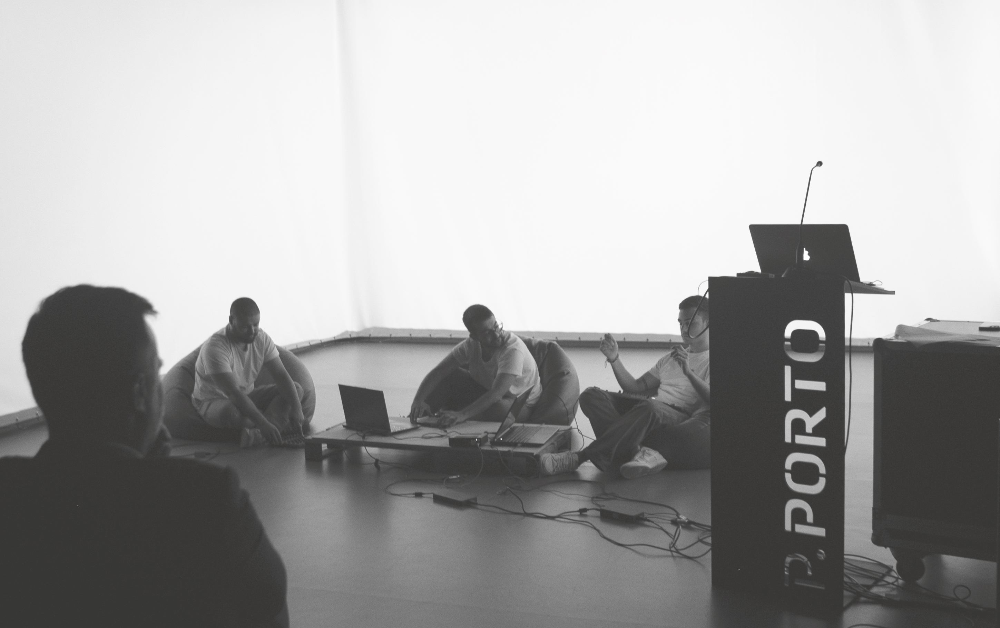

Nucleos
2024
Live jam set for ESMAD aniversary comemorations.
Diogo Nóbrega - Ricardo Ferreira - Simão Almeida

2024
Live jam set for ESMAD aniversary comemorations.
Diogo Nóbrega - Ricardo Ferreira - Simão Almeida